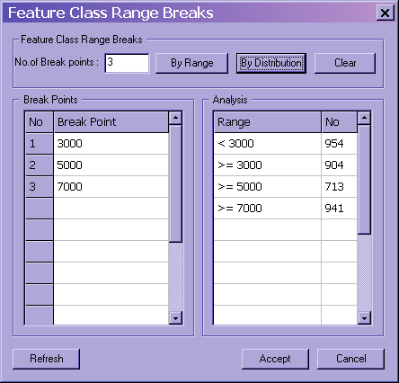

|
MapLink Pro Studio 11.1
|
|
MapLink Pro Studio 11.1
|
Subclassing allows the user to group features present in the data into subsets of the theme. In general, themes are not very specific, and it is useful to break down the features into smaller subgroups of features that can be rendered differently, or discarded altogether.
For instance, the themed data politic contains political areas.
The database contains the following information:
| Name | FIPS_CODE | ADMIN1 | TYPE | CLRCODE |
|---|---|---|---|---|
| France | FR | Illes d' HyÚres | 10 | 4 |
| France | FR | Corsica | 10 | 4 |
| Italy | IT | Sardinia | 10 | 2 |
| Italy | IT | Isola Palmaria | 10 | 2 |
| Italy | IT | Isola di Gorgona | 10 | 2 |
| Italy | IT | Isola di Capraia | 10 | 2 |
| Italy | IT | Isola d'Elba | 10 | 2 |
| Italy | IT | Isola Pianosa | 10 | 2 |
| Italy | IT | Isola del Giglio | 10 | 2 |
| Italy | IT | Isola di Montecristo | 10 | 2 |
By subclassing the features twice, at the first level using field NAME, at the second level using the field ADMIN1, and subclassing the features from the theme, instead of all features that are read from the file having the feature class politic, features could be subgrouped into the following classes:
This allows different rendering information to be applied to each subclass or for certain subclasses to be discarded from the data.
When using MIF, SHP, VPF or S-57 data, it is also possible to apply range breaks to a Feature subclass. This enables features and subclasses to be rendered differently depending on the numerical value for a particular attribute. Unlike normal subclassing, which generates a different subclass for each unique value, the class breaks define ranges so the subclasses are groups of attribute values. (Class breaks can also be used to with non-numeric data).
For example, land contours could be classified by altitude:
Contours.altitudeft below 3000
Contours.altitudeft 3000 to 5000
Contours.altitudeft 5000 to 8000
Contours.altitudeft 8000 and above
The ranges are inclusive of the lower value but exclusive of the higher value. Thus in the above example, a value of 500 would fall into ‘5000 to 8000’.

The Feature Class Range Breaks dialog defaults to displaying range breaks by distribution. This can be changed by hitting the By Range button.
The Break Points grid can be edited by the user. In this example, the user could change 3000 to 2000 and then hit the Refresh button. This updates the Analysis grid appropriately.
The user can change the number of break points required, up to the maximum allowed for the feature. After changing the number of break points the analysis can be updated by hitting either the By Range or By Distribution button, depending on the desired result. Resultant break points can then be edited by hand and the Analysis data subsequently refreshed.
Once set appropriately, the user can hit Accept to set the break points and close the Feature Class Range Breaks dialogue. Alternatively, a user can clear all break points already set by hitting the Clear button, to start again, or Cancel to close the dialogue and to revert to the previous range breaks.